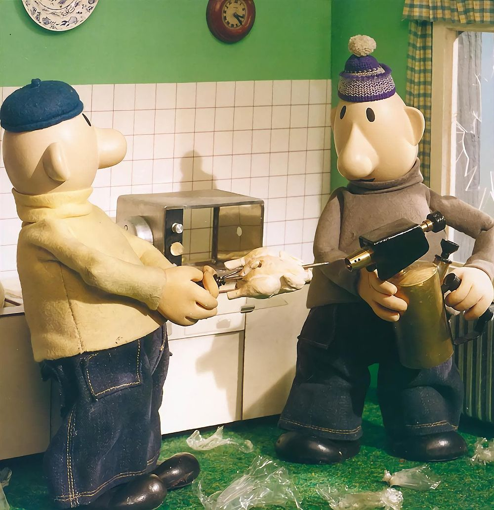
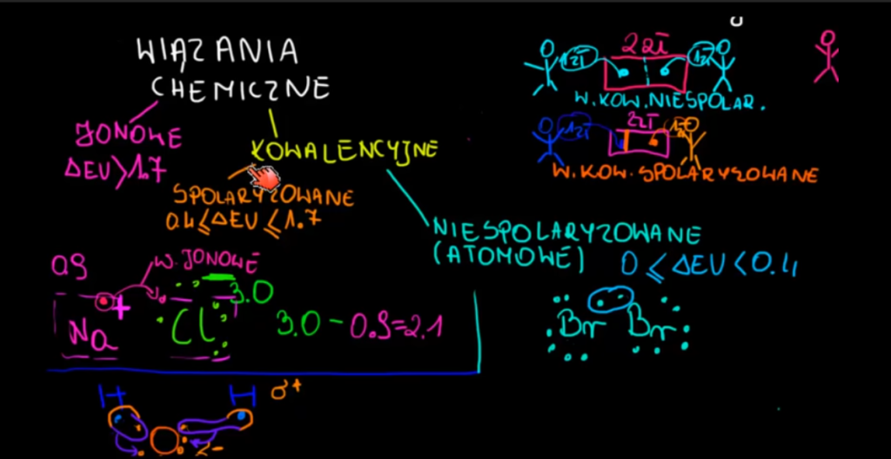

Powitanie
My tworzymy najlepsze strony internetowe. Robimy je tanio. Wczytują się jak błyskawice. Jesteśmy popularni na YT. Czy trzeba więcej dodawać? Na michu.com macie najlepsze usługi do stron internetowych!
Nasze projekty
Mistrzowie głupoty.pl
Strona, na której udostępniane są zdjęcia i nagrania z największymi "inteligentnymi inaczej" świata. Codziennie odwiedza ją ponad 500 tys. użytkowników!
Pat zrobił osłonę z kurczaka, by Mat nie stopił jego wiedźmińskiego miecza.

Gdy Mat stracił panowanie nad piłą mechaniczną, Pat odkrył, gdzie jest jego komórka.
Chemia jest fajna.org
Najpopularniejsza strona do nauki chemii na wszystkich etapach edukacji! Lekcje, zadania, testy i bitwy uczniów na wiedzę to tylko część jej atrakcji. Korzystają z niej nauczyciele i wykładowcy w Polsce! Całkowicie darmowa!
Lekcja o wiązaniach jonowychO stronie
Żubr europejski, żubr (Bos bonasus) – gatunek łożyskowca z rodziny wołowatych, rzędu parzystokopytnych. W 2013 roku światowa liczebność gatunku wynosiła 5249 osobników, z czego 1623 przebywało w hodowlach zamkniętych, a 3626 żyło w wolnych i w półwolnych populacjach. Według danych z 2013 roku w Polsce żyło 1377 żubrów, z czego większość (1138) w stadach wolnościowych (pięć populacji), z końcem 2017 liczba ta wzrosła do 1873 osobników, z końcem 2019 do 2269 zwierząt, a u schyłku 2020 do 2316. W 2021 roku liczebność wynosiła 2429 osobników (w tym 206 w hodowlach zagrodowych (76 samców oraz 130 samic) i 2223 w hodowlach wolnych).